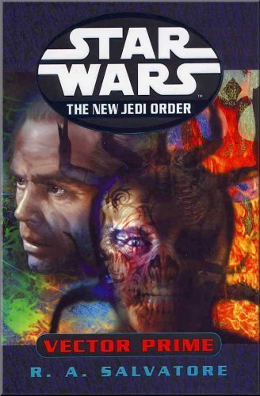
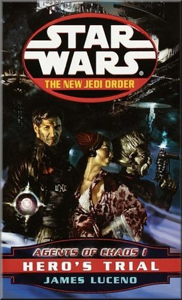
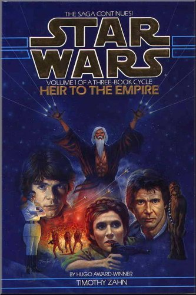
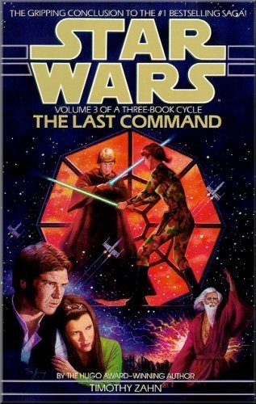
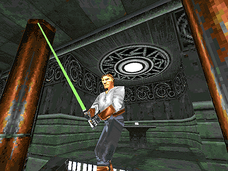
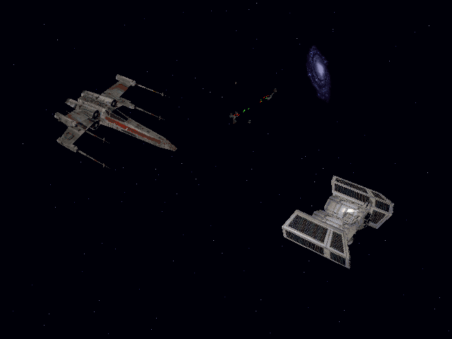
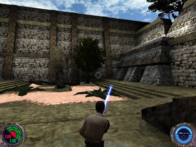

Star Wars / Expanded Universe
For some Star Wars fans the EU is an unimportant, unrelated and often contradictory part of the Star Wars universe. I sometimes feel that way myself, especially when someone tries to justify something from the films using the EU. However, there are some great books and games from the Star Wars universe, some of which are mentioned here.
Books
The New Jedi Order: 'Vector Prime', 'Dark Tide: Onslaught', 'Dark Tide: Ruin', 'Agents of Chaos: Hero's Trial' ...The Galaxy is under a new and dangerous threat. Will the New Republic be able to survive in this epic storyline?
Dismissed by many because of the death of Chewbacca in the first novel, the NJO has become a great storyline in which you really don't know what's going to happen. Let's just hope it can continue its trend and come to a great conclusion.
 
The Thrawn Trilogy: 'Heir to the Empire', 'Dark Force Rising', 'The Last Command'.Grand Admiral Thrawn begins his campaign to destroy the New Republic with some great success. The Republic must gather all its resources to win.
Sometimes credited as reviving interest in Star Wars, the Thrawn trilogy has become the metre stick by which all other Star Wars fiction is measured. Full of great action and many other controversial elements, the trilogy still earns respect.
 
Games
Dark Forces II: Jedi KnightPlay as Jedi Trainee Kyle Katarn as he avenges his Fathers death, kills seven deadly Dark Jedi, becomes a Jedi Knight himself and saves the Valley of the Jedi from falling into the wrong hands.
If you want action, adventure and a great online community, Jedi Knight has it all and more. Although it doesn't really tie-in with the films it is still a great game with many online expansive possibilities.

X-Wing vs. TIE FighterTake the role as an Imperial or Rebel pilot and fly numerous missions in both team and individual arenas.
Once the industry standard for space flying sims, it has now been out-shone by games like X-Wing Alliance and Starfighter. However it is still one of the best Star Wars games around and highly enjoyable to play.

Jedi Knight II: Jedi OutcastReturn as former Jedi Knight Kyle Katarn in an attempt to prevent the Imperial Remnant and the Dark Jedi Desann from destroying the Jedi.
Filled with more action and a better lightsaber engine than its predecessor, Jedi Outcast combines great graphics and game play from the makers of Quake 3.

This site, PaddyFedoo Online, is © of Patrick O' Hara.
Do not use any images or sounds without permission.
Any other images and sounds are © of their respective owners.
If you do own anything and want it removed, please e-mail me
|